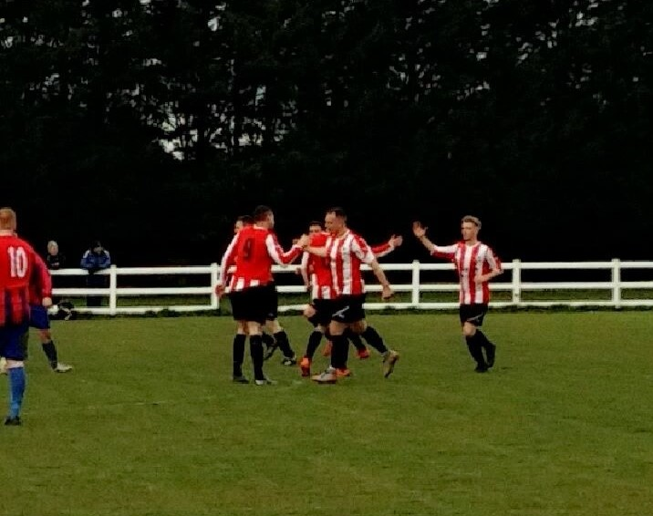
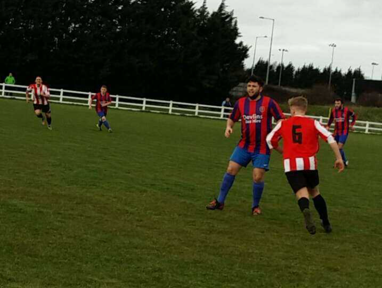
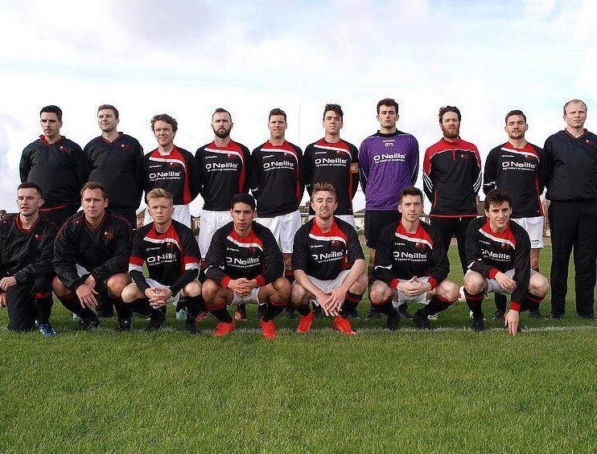
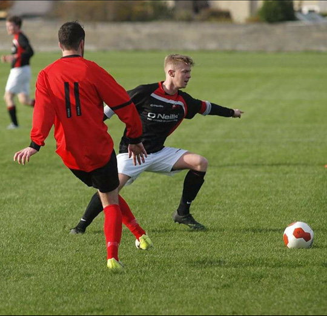

I have a great love for design, fashion and music. I enjoy a wide range of musical genres from Indie to Hip Hop. I have taken art & design classes in my spare time and am keen to continue developing my skills in this area.
I am also a lover of many sports such as soccer, GAA and golf and have played each of these either individually or as part of a team for many years. I am currently playing football for Beech Park FC, GAA for Lucan Sarsfields and I'm also a member of Lucan Golf Club and play off a handicap of 9.
Achievements
Sporting
Captained my school soccer team to the junior Dublin League and Leinster Cup
Won soccer player of the year in 6th year
Won Lucan junior golfer of the year 2012
Captained Lucan United under 19's to League Victory in 2014
Educational
Won student of the year awards during my time in Secondary school for Art, Maths, English and Business
Have successfully completed three years of college undertaking many projects and assignments
Skills
IT Skills
ITIL Foundation Certificate
Web Design
Database Management
Network Administration
Knowledge of Cloud Computing
Numeracy skills
Problem Solving Skills
Personal Skills
Communication Skills
Team work skills
Leadership skills
Dependability
Flexible
Sports
My sporting life in pictures..
Lucan United

Lucan United

League Team

League Team

Golf
Map
Contact Me
I am contactable by mobile at any time between 09:00-21:00 7 days a week and by email 09:00-21:00, Monday-Friday.